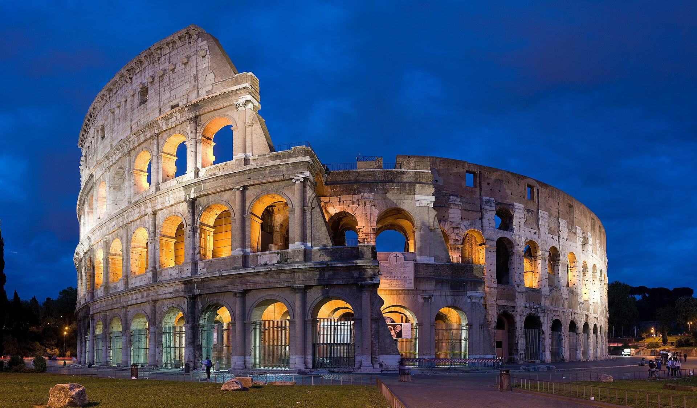
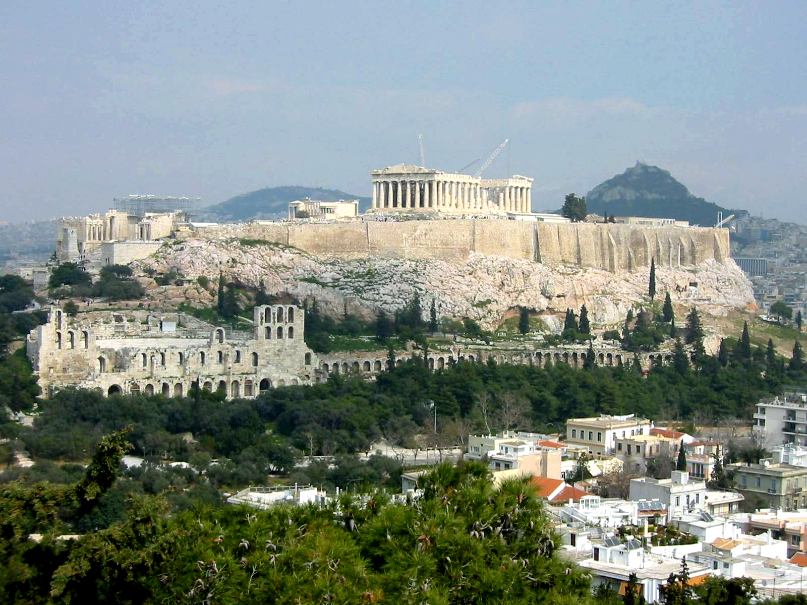
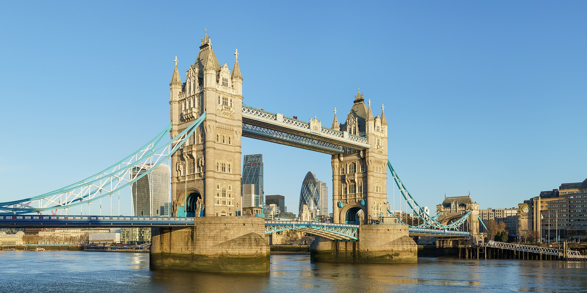
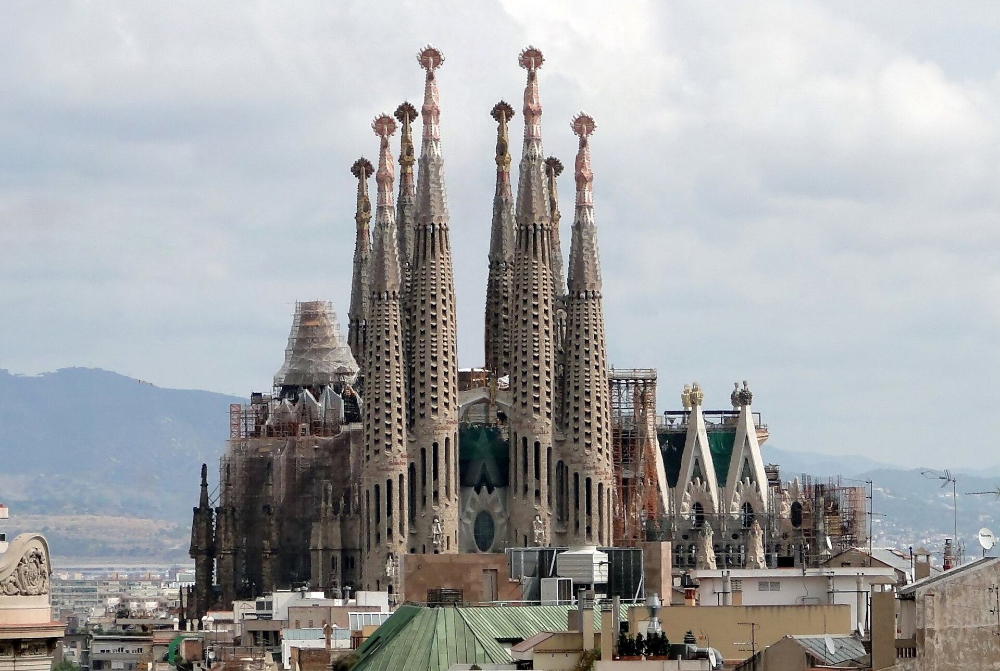
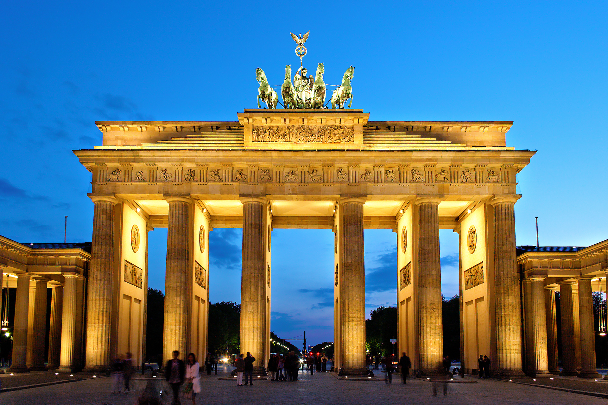
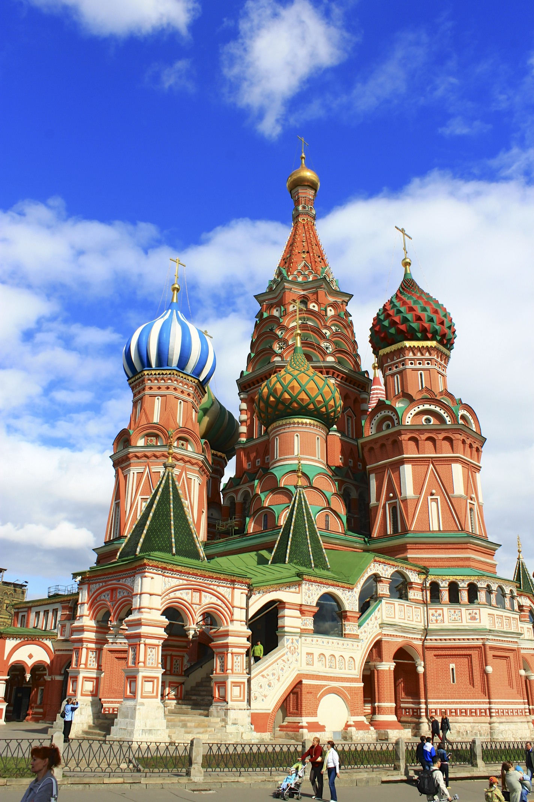
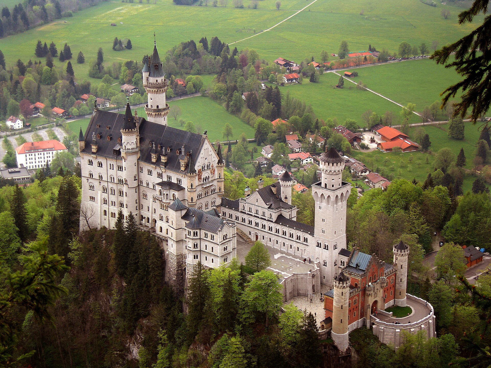

Überblick
Wahrzeichen Europas sind gebaute und gewachsene Landmarken, an denen sich kollektive Erinnerung, nationale Symbolik und touristische Wahrnehmung verdichten. Sie stehen selten allein für „schönes Bauwerk“: Viele markieren Machtwechsel, technische Fortschritte, religiöse oder dynastische Programme oder die Wiederaneignung älterer Formen in späteren Epochen. Für die Enzyklopädie-Struktur der Geografie ergänzt dieser Artikel den Kontinent-Einstieg Europa um eine kulturlandschaftliche Lesart – Städte, Küsten und Gebirge bleiben die physischen Rahmen; die hier versammelten Objekte sind die markantesten sichtbaren Ankerpunkte in diesem Raum.
Die Auswahl ist bewusst exemplarisch und unvollständig: Acht Objekte aus West-, Süd-, Mittel- und Osteuropa decken Antike, Mittelalter, Frühe Neuzeit, Industrialisierung und Moderne ab, ohne Anspruch auf Ranglisten. Natürliche und gebaute Landmarken mischen sich nicht willkürlich – in Europa überwiegen in der öffentlichen Wahrnehmung gebaute Monumente, weil dichte Besiedlung und lange Schriftkultur Bilder von Türmen, Brücken, Tempeln und Toren besonders stark geprägt haben. Dennoch wirken auch Schloss und Landschaft (etwa Neuschwanstein) oder Stadt und Fluss (Tower Bridge) als Ensemble.
Gemeinsam ist den folgenden Wahrzeichen, dass ihre heutige Bedeutung oft von der ursprünglichen Funktion abweicht: Amphitheater wurde Steinbruch und Touristenort, Weltausstellungsturm zum Nationalsymbol, Stadttor zur Bühne der deutschen Einheit. Empfang, Restaurierung und UNESCO-Schutz haben die Wahrnehmung weiter überformt. Die Abschnitte unter „Die Wahrzeichen“ skizzieren jeweils Lage und Erscheinung, Bau- und Nutzungsgeschichte sowie spätere Rezeption – ohne erfundene Besucherzahlen oder präzise „Weltrekorde“, wo Quellen unsicher oder definitionsabhängig sind.
Die Wahrzeichen
Eiffelturm
Der Eiffelturm (Tour Eiffel) steht auf dem Champ de Mars in Paris und ist das bekannteste moderne Wahrzeichen Frankreichs. Die schmiedeeiserne Fachwerkstruktur wurde für die Weltausstellung 1889 errichtet, die das hundertjährige Jubiläum der Französischen Revolution markierte. Entwurf und Ausführung gehen auf Gustave Eiffel sowie die Ingenieure Maurice Koechlin und Émile Nouguier und den Architekten Stephen Sauvestre zurück; der Entwurf setzte sich in einem Wettbewerb gegen zahlreiche Alternativen durch. Baubeginn war im Januar 1887; die Montage der Metallteile begann im Juli 1887; am 31. März 1889 galt das Bauwerk als fertiggestellt – in rund zwei Jahren, zwei Monaten und fünf Tagen.
Die Höhe lag ursprünglich bei etwa 300 Metern (ohne spätere Antennenaufbauten). Tausende vorgefertigte Teile und Millionen Nieten machten den Turm zu einem technischen Schaustück der Industrialisierung: Präzision in der Werkstatt, Montage auf der Baustelle, Dampfkräne und ein enges Zeitfenster vor Eröffnung der Ausstellung. Zeitgenössische Künstler und Intellektuelle kritisierten die Form als industriell und „unfranzösisch“; die geplante Abrissperspektive nach Ablauf der Konzession wich später der dauerhaften Nutzung, unter anderem als Funk- und Sendestation. Heute ist der Turm zentrales Element der Pariser Stadtsilhouette und Sinnbild technischer Moderne – zugleich touristische Infrastruktur mit Aussichtsplattformen. Seine Bedeutung für Europa liegt weniger in der absoluten Höhe als in der frühen Verbindung von Ingenieurkunst, Weltausstellung und nationaler Bildpolitik.
Kolosseum

Das Kolosseum (Amphitheatrum Flavium) in Rom ist das größte erhaltene Amphitheater der römischen Welt und zählt zum UNESCO-Welterbe im Historischen Zentrum Roms. Kaiser Vespasian ließ den Bau um 70–72 n. Chr. auf dem Gelände des früheren Sees der Domus Aurea Neros beginnen; Titus weihte das Amphitheater 80 n. Chr. ein; Domitian ergänzte später unter anderem Obergeschoss und Unterbauten. Das elliptische Bauwerk aus Travertin, Tuff, Ziegel und Opus caementicium fasste nach gängigen Schätzungen in der Größenordnung von rund 40 000 bis 50 000 Zuschauern – genaue Kapazitätsangaben schwanken je nach Rekonstruktion der Sitzreihen.
Hier fanden Gladiatorenkämpfe, Tierhetzen und festliche Spiele statt; die Spiele dienten der Selbstdarstellung der flavischen Dynastie und der Integration des Stadtvolks. Der Name „Kolosseum“ leitet sich von einer kolossalen Statue in der Nähe ab, nicht vom lateinischen Begriff für Amphitheater. Nach der Antike diente der Bau unter anderem als Steinbruch, Festung und Wohnraum; Erdbeben und Materialentnahme beschädigten die Außenmauer. Seit der Neuzeit ist das Kolosseum Sinnbild Roms und der römischen Antike; Restaurierung und Besuchermanagement prägen den heutigen Erhaltungszustand. Als Wahrzeichen Europas verkörpert es imperiale Architektur, Massenunterhaltung und die lange Nachgeschichte antiker Großbauten in dichter urbaner Lage.
Akropolis von Athen

Die Akropolis von Athen ist der befestigte Burgberg über der griechischen Hauptstadt und UNESCO-Welterbe (1987). Ihre klassische Monumentalarchitektur des 5. Jahrhunderts v. Chr. – vor allem Parthenon, Propyläen, Erechtheion und Tempel der Athena Nike – entstand im perikleischen Bauprogramm nach den Perserkriegen. Der Parthenon (Architekten Iktinos und Kallikrates, skulpturales Programm unter Phidias) wurde etwa 447–438 v. Chr. errichtet; Arbeiten an den Giebelskulpturen dauerten bis um 432 v. Chr. Der Tempel galt der Athena Parthenos und war zugleich Schatz- und Repräsentationsbau der attischen Demokratie auf dem Höhepunkt ihrer Macht.
Die Akropolis hatte ältere mykenische und archaische Phasen; 480 v. Chr. zerstörten persische Truppen ältere Tempelbauten. In byzantinischer, lateinischer und osmanischer Zeit wurden Bauwerke umgenutzt; 1687 zerstörte eine Explosion gelagerten Schießpulvers im Parthenon während der venezianischen Belagerung große Teile. Seit dem 19. Jahrhundert prägen Archäologie, Teilrekonstruktion und der Streit um die Parthenon-Skulpturen (Elgin Marbles) die Rezeption. Für Europa ist die Akropolis ein Schlüsselbild klassischer Antike und Vorbild neoklassizistischer Architektur weltweit – zugleich ein Ort, an dem Tourismus, Nationalsymbolik Griechenlands und Denkmalpflege eng verschränkt sind. Laufende Restaurierungen zielen auf strukturelle Sicherung und lesbare Ergänzungen, ohne den Ruincharakter vollständig zu tilgen; der Umgang mit fehlenden Skulpturen bleibt eine internationale Kulturdebatte.
Tower Bridge

Die Tower Bridge überquert die Themse in London nahe dem Tower of London. Sie ist eine kombinierte Klapp- und Hängebrücke im neugotischen Stil und wurde 1886–1894 gebaut. Architekt war Horace Jones, leitender Ingenieur Sir John Wolfe Barry; Jones starb während der Bauzeit, Barry brachte das Projekt zu Ende. Eröffnet wurde die Brücke am 30. Juni 1894 durch den Prince of Wales (später Eduard VII.) und Princess Alexandra. Anlass war der wachsende Verkehr im Osten Londons bei gleichzeitigem Bedarf, große Schiffe in den Pool of London lassen zu können – daher die beweglichen Klappen (Baskülen).
Stahlkonstruktion, steinerne Verkleidung der Türme und hydraulische (später elektrisch unterstützte) Antriebe verbinden Ingenieurwesen der Hochindustrialisierung mit historisierender Fassade. Die Brücke bleibt eine funktionierende Verkehrsverbindung und öffnet nach wie vor für Schiffe; das Tower Bridge Act von 1885 regelt Prioritäten von Schiffs- und Straßenverkehr. In der öffentlichen Wahrnehmung wird sie häufig mit der London Bridge verwechselt, obwohl es sich um unterschiedliche Bauwerke handelt. Als Wahrzeichen steht sie für das viktorianische London, die Themse als Verkehrsader und die visuelle Marke der britischen Hauptstadt – ein Ensemble aus mittelalterlichem Tower und industriemodernem Brückenbau.
Sagrada Família

Die Sagrada Família (Basílica i Temple Expiatori de la Sagrada Família) in Barcelona ist eine römisch-katholische Basilika und eines der markantesten unvollendeten Großbauwerke Europas. Der Grundstein wurde am 19. März 1882 gelegt; zunächst plante Francisco de Paula del Villar eine neugotische Kirche. Ab 1883 übernahm Antoni Gaudí die Leitung und formte den Entwurf radikal um: gotische und organisch-kurvilineare Formen, komplexe Turm- und Fassadenprogramme (Geburt, Passion, Herrlichkeit), naturanaloges Stützenwerk. Gaudí widmete dem Bau den Rest seines Lebens; er starb 1926 und ist in der Krypta begraben. Zu seinem Tod war nur ein Bruchteil fertiggestellt.
Finanzierung durch Spenden, Bürgerkrieg, Brandschäden an Plänen und lange Unterbrechungen prägten die Baugeschichte. 2005 wurden Krypta und Geburtsfassade als Teil der „Werke Antoni Gaudís“ UNESCO-Welterbe. 2010 weihte Papst Benedikt XVI. den Innenraum und erhob die Kirche zur Basilica minor. Der Bau setzt sich fort; Türme und Fassaden erreichen schrittweise den geplanten Gesamtumriss, während Fertigstellungstermine projektionsabhängig bleiben. Als Wahrzeichen Kataloniens und Spaniens steht die Sagrada Família für die Verschränkung von Sakralbau, modernistischer Formensprache und generationsübergreifender Baupraxis – und für die Frage, wie treu spätere Architekten Gaudís Intentionen umsetzen können.
Brandenburger Tor

Das Brandenburger Tor in Berlin ist ein klassizistisches Stadttor am Pariser Platz und das bekannteste politische Wahrzeichen Deutschlands. Errichtet wurde es 1788–1791 im Auftrag König Friedrich Wilhelms II. nach Entwürfen von Carl Gotthard Langhans; Vorbild waren Propyläenmotive der griechischen Antike. Die Quadriga von Johann Gottfried Schadow bekrönt den Bau. Ursprünglich eines von mehreren Berliner Stadttoren, blieb es als einziges in seiner monumentalen Form erhalten und wandelte sich vom Verkehrstor zum Nationaldenkmal.
Napoleon ließ die Quadriga 1806 nach Paris bringen; nach den Befreiungskriegen kehrte sie zurück und wurde zum Symbol preußisch-deutschen Sieges umgedeutet. Im 20. Jahrhundert diente das Tor als Kulisse für Kaiserreich, Weimarer Republik, NS-Propaganda und DDR-Staatsakte. Mit dem Bau der Berliner Mauer 1961 lag es im Grenz- und Sperrgebiet; nach der Öffnung der Mauer 1989 und der Durchfahrt am Tor wurde es zum Sinnbild der deutschen Einheit. Restaurierungen und die Neugestaltung des Pariser Platzes nach 1990 haben den heutigen Zustand geprägt. Geografisch markiert es die Achse Unter den Linden und die Mitte Berlins; politisch verdichtet es europäische Grenz- und Einheitsgeschichte in einem einzigen Bauwerk. Feiern, Mahnwachen und Staatsbesuche nutzen den Pariser Platz bis heute als Bühne – ein Stadttor, das Verkehrsfunktion längst an symbolische Funktion abgegeben hat.
Basilius-Kathedrale

Die Basilius-Kathedrale (Pokrowski-Kathedrale „Wasili Blaschenny“) am Roten Platz in Moskau ist ein Ensemble bunter Zwiebeltürme und Kapellen und eines der bekanntesten Bilder Russlands. Iwan IV. (der Schreckliche) ließ sie ab 1555 zum Gedenken an die Eroberung Kasans (1552) errichten; der Kernbau war um 1561 weitgehend fertig. Traditionell werden die Baumeister Barma und Postnik mit dem Werk verbunden; genaue Zuschreibungen bleiben in der Forschung teilweise unsicher. Der Bau vereint mehrere Kirchen unter einem Gesamtkonzept und weicht bewusst von byzantinisch-kreuzförmigen Schemata ab.
Spätere Anbauten, Farbfassungen und die Umbenennung zu Ehren des „seligen Basilius“ (Wasili Blaschenny) prägten Erscheinungsbild und Volksname. In sowjetischer Zeit wurde die Kirche als Museum genutzt und dem Abrissrisiko politisch aufgeladener Stadterneuerung ausgesetzt, blieb aber erhalten. Heute ist sie Teil des UNESCO-Welterbes „Kreml und Roter Platz“ und zugleich religiöser und touristischer Ort. Als Wahrzeichen steht sie für die frühe Neuzeit Moskaus, die visuelle Marke des Roten Platzes und die spannungsreiche Geschichte sakraler Architektur unter Zaren-, Sowjet- und postsowjetischer Herrschaft – ein Gegenstück zu westeuropäischen Dom- und Schlossbildern in der europäischen Wahrzeichenlandschaft. Farbfassungen und Zwiebelformen, die auf Fotografien so „typisch russisch“ wirken, sind selbst Ergebnis späterer Überarbeitungen und touristischer Bildkonventionen.
Neuschwanstein

Schloss Neuschwanstein bei Schwangau in Bayern ist ein historistisches Königsschloss König Ludwigs II. und eines der meistfotografierten Bauwerke Deutschlands. Der Grundstein wurde am 5. September 1869 gelegt; Vorarbeiten an Straße und Bauplatz liefen ab 1868. Der Palas und weitere Trakte entstanden über Jahre; Ludwig II. erlebte den Bau vor allem als Baustelle und nutzte zeitweise das fertige Torhaus. Nach seinem Tod 1886 wurde das Schloss bald für Besucher geöffnet; Teile wie der Quadratische Turm und der Kemenatenbau wurden vereinfacht bis 1892 fertiggestellt. Geplant war eine idealisierte Ritterburg im Geist mittelalterlicher Sagen und der Opernwelt Richard Wagners – kein Wehrbau, sondern ein Inszenierungsraum.
Technisch kombiniert Neuschwanstein mittelalterlich anmutende Kalksteinverkleidung mit Ziegelkern, Stahlkonstruktionen (etwa für den Thronsaal) und zeitgenössischem Komfort. Die Lage über der Pöllatschlucht und dem Alpsee macht das Ensemble aus Architektur und Alpenvorland zum Wahrzeichen. Die spätere Rezeption reicht von romantischem Tourismus über filmische Zitate bis zur Marke „Märchenschloss“. Für die Geografie Europas illustriert Neuschwanstein, wie Gebirgsrandlage, monarchische Repräsentation und massentouristische Nachnutzung eine Landschaft dauerhaft umcodieren – ohne dass der Bau jemals die ursprünglich geplante Vollständigkeit erreichte. Die Bayerische Schlösserverwaltung steuert Besucherzahlen und Erhalt; das Schloss bleibt ein Lehrstück dafür, wie ein privates Fantasieprojekt zum öffentlichen Weltbild von „Bayern“ und „Romantik“ werden kann.
Quellen
- Official Eiffel Tower – History of the monument: https://www.toureiffel.paris/en/the-monument/history
- Encyclopaedia Britannica – „Eiffel Tower“: https://www.britannica.com/topic/Eiffel-Tower-Paris-France
- Encyclopaedia Britannica – „Colosseum“: https://www.britannica.com/topic/Colosseum
- UNESCO – Historic Centre of Rome (Welterbe inkl. Kolosseum): https://whc.unesco.org/en/list/91/
- Encyclopaedia Britannica – „Parthenon“: https://www.britannica.com/topic/Parthenon
- UNESCO – Acropolis, Athens: https://whc.unesco.org/en/list/404/
- Greek Ministry of Culture – Parthenon (Odysseus): http://odysseus.culture.gr/h/2/eh251.jsp?obj_id=912
- Tower Bridge – Construction timeline: https://www.towerbridge.org.uk/stories/timeline-the-construction-of-tower-bridge
- Institution of Civil Engineers – Tower Bridge: https://www.ice.org.uk/what-is-civil-engineering/infrastructure-projects/tower-bridge
- Sagrada Família – History of the Temple: https://sagradafamilia.org/en/history-of-the-temple/
- UNESCO – Works of Antoni Gaudí: https://whc.unesco.org/en/list/320/
- visitBerlin – Brandenburger Tor: https://www.visitberlin.de/de/brandenburger-tor
- Berlin.de – Brandenburger Tor: https://www.berlin.de/sehenswuerdigkeiten/3560266-3558930-brandenburger-tor.html
- Encyclopaedia Britannica – „Saint Basil the Blessed“: https://www.britannica.com/topic/Saint-Basil-the-Blessed
- UNESCO – Kremlin and Red Square, Moscow: https://whc.unesco.org/en/list/545/
- Bayerische Schlösserverwaltung – Neuschwanstein building history: https://www.neuschwanstein.de/englisch/palace/history.htm
- Bayerische Schlösserverwaltung – Neuschwanstein overview: https://www.schloesser.bayern.de/englisch/palace/objects/neuschw.htm